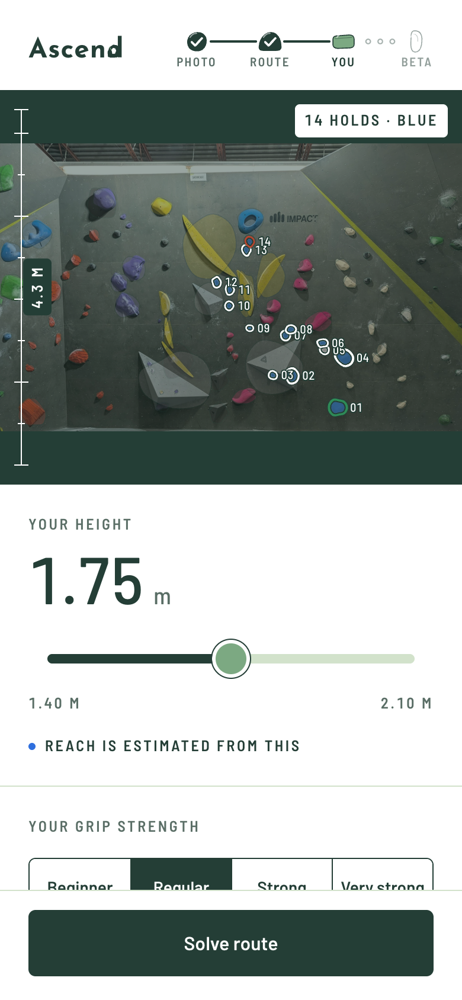
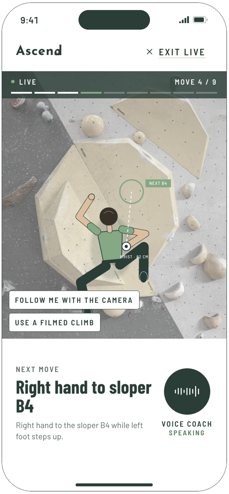

Why we built it
V4 at home means nothing in a gym that grades by tape colour. The regulars know the beta. You don't.
Set for an average-height climber. Tens of thousands of graded board climbs never reach a gym wall.
Colourblind? Red and green look the same. Low vision? Dark holds on a dark wall, chalk, shadow.
At 1.60 m and 1.90 m, half the moves are a stretch for one of you and easy for the other.
A grade for your body
Height changes how far apart every hold is. Strength changes how hard each one is to hold. Both go into the solver before the grade.

One photo
Holds + colour routes
Route, height, strength
Moves, physics, grade
3D, voice coach, live camera
The solver
Add the costs up and the cheapest path is exactly the sequence with the highest chance of reaching the top.
Feet are planned for each hand position: onto route holds, or smearing on bare wall.
The physics
Every pose must balance. Each hand or foot can only push or pull the way its hold allows:
Grip limit = hold quality × your strength. Effort ≥ 1 can't be held. One small solve, about 50 µs a pose.
Accessibility
Every route is named by a colour read from the photo, not from your eyes. Pick it by name and its holds light up.
Dark on dark, shadow, chalk, tiny footholds: the detector finds them anyway, and the 3D wall shows what sticks out.
MediaPipe tracks your hands and feet. The coach says what moves next, and moves on by itself when you land it. No screen, no touching the phone. A sight guide without a second person.

Record and share
| What we measured | Ascend | Baseline |
|---|---|---|
| Holds found: 50 test photos, 3,433 holds | 95% | 38% |
| Holds found: real gyms, 19 photos | 87% | — |
| Physics vs real climbers: sequence match | 0.58 | 0.46 untuned |
| Route comes out as one clean group | 43% | 19% |
| Grade error in Font steps: MoonBoard / Kilter | 0.94 / 1.30 | 1.67 / 3.74 |
All on held-out data. Grade error is mean absolute error in Font grade steps, on the training boards, not on gym walls.
Zero-shot found 38%. Fine-tuning plus cutting the photo into tiles: 95%. Under 20 px is still the weak spot.
Shadows blur blue, purple, red and black; one wall had four greens. So: colour chips you can merge, split or tap to fix.
The type model is usually right but rarely sure. Up to eight questions a route, now capped at the two least certain holds.
First moves were near impossible. Standing up off the floor took topping out from 0–4% to 89–100%.
Augmented copies of a photo were in both train and test. We re-split by original photo: every number is on unseen data.
Great on the boards, no better than guessing on a real gym wall. So we lead with effort per move and chance of topping out.
Colour chips and two questions beat any model tweak.
A tuned balance model beat a grade model trained on 75,000 board climbs.
Overlaps, augmented copies and board-only results all flattered us.
A real gym showed us problems no benchmark did.
Hands-free, spoken moves are the best part for anyone on the wall.
and build around what they tell us.
"Up and right, about half a metre," relative to your hand.
trained on climbs recorded through the app.
retrain hold types on the holds you confirm.
momentum moves, and proper sit starts.
per gym, ranked by personal grade, so height and strength don't decide who's top.